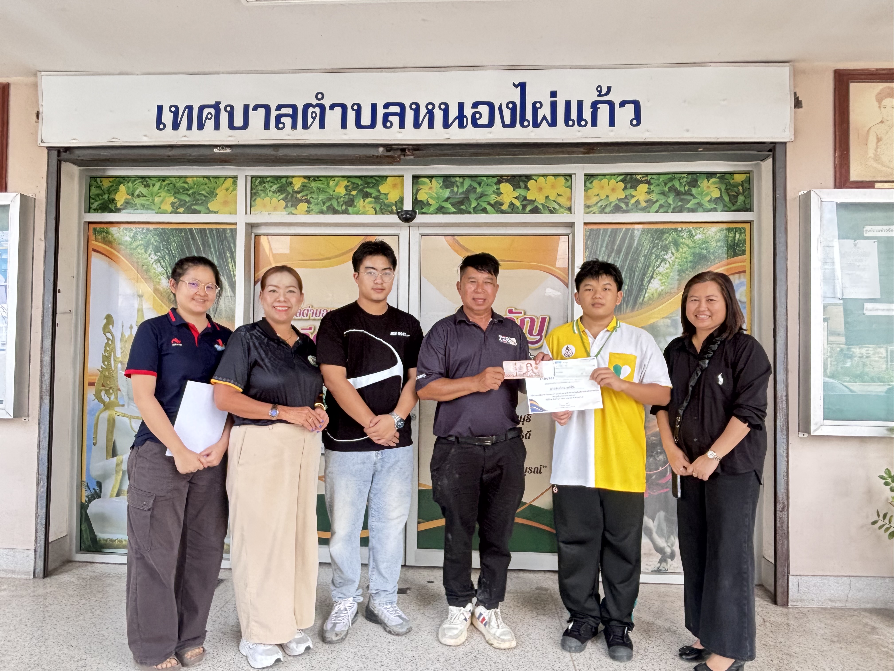

ประวัติการฝึกงานและประสบการณ์ทำงาน
การเรียนรู้ประสบการณ์ทำงานจริงในหน่วยงานราชการท้องถิ่น พัฒนาทักษะการบริหารงานเอกสารสารบรรณ การประสานงาน การทำงานเป็นทีม และจิตบริการประชาชน ณ เทศบาลตำบลหนองไผ่แก้ว
🏛️ ข้อมูลการฝึกงาน
📅 ปีงบประมาณ 2568 - 2569 (2 ปีติดต่อกัน)
ได้รับโอกาสปฏิบัติงานช่วงปิดภาคเรียนต่อเนื่องเป็นเวลา 2 ปีงบประมาณ ในโครงการจ้างนักเรียน นักศึกษาทำงานของเทศบาลตำบลหนองไผ่แก้ว โดยปฏิบัติงานในตำแหน่งผู้ช่วยเจ้าหน้าที่ฝ่ายบริหารทั่วไป ได้เรียนรู้ระบบการทำงานราชการ ฝึกความรับผิดชอบ ความระเบียบเรียบร้อย และการบริการประชาชนอย่างเป็นมืออาชีพ
📄 งานระบบสารบรรณ & เอกสาร
จัดเก็บ ลงทะเบียนรับ-ส่ง และค้นหาหนังสือราชการอย่างเป็นระบบ ช่วยเดินหนังสือประสานงานระหว่างฝ่ายต่างๆ ภายในเทศบาล
🤝 การบริการประชาชน (Service Mind)
ต้อนรับ และอำนวยความสะดวกแก่ประชาชนที่เดินทางมาติดต่อราชการ รวมถึงการตอบข้อซักถามพื้นฐานด้วยความสุภาพ
🏢 งานสนับสนุนการประชุม & โครงการ
ช่วยจัดเตรียมสถานที่ วัสดุอุปกรณ์ และจัดเตรียมเอกสารสำหรับการประชุมสภาเทศบาล และงานโครงการกิจกรรมชุมชน
👥 ทักษะการทำงานร่วมกับผู้อื่น
ทำงานร่วมกับเจ้าหน้าที่ราชการและเพื่อนนักศึกษาอย่างมีประสิทธิภาพ ฝึกทักษะการสื่อสาร ความตรงต่อเวลา และการแก้ปัญหาเฉพาะหน้า
🌟 ทักษะสำคัญที่ได้รับการพัฒนา (Key Skills):
#งานสารบรรณ
#การจัดการเอกสารราชการ
#การบริการประชาชน
#จิตบริการ (Service Mind)
#การประสานงานองค์กร
#การทำงานเป็นทีม
#ความรับผิดชอบและตรงต่อเวลา
🖼️ ภาพบรรยากาศการฝึกงาน & พิธีรับมอบวุฒิบัตร

ถ่ายภาพร่วมกับคณะผู้บริหารและเจ้าหน้าที่
บรรยากาศการถ่ายภาพร่วมกับคณะผู้บริหารและพี่ๆ เจ้าหน้าที่เทศบาลตำบลหนองไผ่แก้ว เนื่องในโอกาสสำเร็จการปฏิบัติงานโครงการจ้างนักเรียน/นักศึกษา

พิธีรับมอบเกียรติบัตร & หนังสือรับรองผ่านงาน
รับมอบเกียรติบัตรและหนังสือรับรองการปฏิบัติงานปิดโครงการ จากผู้บริหารเทศบาลตำบลหนองไผ่แก้ว พร้อมคณะเจ้าหน้าที่ร่วมแสดงความยินดี